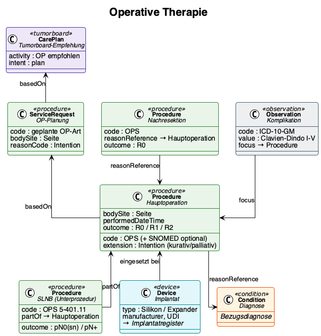

Senologie Core Dataset
0.10.0 -
Kerndatensatz Senologie - Local Development build (v0.10.0) built by the FHIR (HL7® FHIR® Standard) Build Tools. See the Directory of published versions

Surgery is a central component of treatment for most breast carcinomas — either as the first therapeutic step or following neoadjuvant systemic therapy — and is flanked by adjuvant treatments (radiotherapy, systemic therapy). The spectrum encompasses breast-conserving procedures, mastectomies, axillary interventions for lymph node assessment, and reconstructive operations. Breast centres also perform risk-reducing procedures (e.g. in BRCA mutation carriers) and revision surgery (e.g. for implant-related complications).
Because multiple individual procedures are frequently performed within a single operation — for example a breast-conserving excision combined with a sentinel lymph node biopsy and intraoperative specimen radiography — the data model represents an overarching surgical procedure together with its associated sub-procedures. The main procedure represents the operative intervention as a whole (date, intent, overall outcome), while the sub-procedures document the individual surgical measures with their specific OPS codes.
Surgical procedures in Germany are coded using the Operationen- und Prozedurenschlüssel (OPS). The exact OPS codes are captured via the hospital information system (KIS) and can be transferred from there. A complete mapping of the OPS classification to SNOMED CT is not feasible without extensive use of post-coordination and therefore lies outside the scope of the first version of this module. The data model provides for both coding systems as Coding slices — OPS as the primary code from the KIS, SNOMED CT optionally as an international supplement where unambiguous mappings exist.
| Procedure type | OPS range | SNOMED CT (where unambiguous) |
|---|---|---|
| Breast-conserving excision | 5-870 | 392021009 Lumpectomy |
| Mastectomy | 5-872.0 / 5-872.1 | 172043006 Simple mastectomy |
| Sentinel lymph node biopsy (Sentinel-LK-Biopsie) | 5-401.11 | 396487001 Sentinel lymph node biopsy |
| Axillary dissection (Axilla-Dissektion) | 5-402 | 79544006 Axillary dissection |
| Breast reconstruction (implant) | 5-886 | 33496007 Mammoplasty |
Surgical care follows a defined pathway: the interdisciplinary tumour board (Tumorkonferenz) issues a therapy recommendation. This results in an operative plan specifying laterality, the planned type of surgery, and, where applicable, preoperative marking. After the procedure, the surgeon documents the outcome — including the residual tumour status (R0/R1/R2) derived from the pathological findings of the surgical specimen.
Axillary surgical measures serve diagnostic, prognostic, and therapeutic functions. The operative approach therefore varies depending on the clinical findings and the systemic therapy strategy. Sentinel lymph node biopsy is an established procedure in the clinically node-negative axilla, but is increasingly being questioned in the context of current de-escalation concepts. Axillary dissection remains in selective use for suspicious lymph nodes, with targeted axillary dissection (Target Axillary Dissection) being applied with increasing frequency.
The outcome — the number of lymph nodes removed and involved — feeds into the pathological N-staging.
If a tumour-free resection margin is not achieved (R1 situation), a re-excision is performed. The number of interventions required to achieve R0 is a derivable quality indicator for DKG certification.
Surgical complications are recorded using the Clavien-Dindo classification (grade I–V), supplemented by the ICD-10-coded complication diagnosis. This information is relevant both for internal quality assurance and for external reporting (oBDS, IQTIG).
When breast reconstruction is performed with an implant, additional implant data are recorded (manufacturer, type, volume, UDI). These are required for the statutory notification to the implant registry (IRegG).
| Type | Resource |
|---|---|
| Profile | Senologie_Operation |
| Profile | Senologie_OP_Planung |
| Profile | Senologie_Operative_Komplikation |
| Profile | Senologie_Implantat |
| Questionnaire | OP-Planung |
| Questionnaire | Postoperativ |
| Example | Case 1 — BCS |
| Example | Case 1 — SLNB |
| Example | Case 1 — Operative Plan |